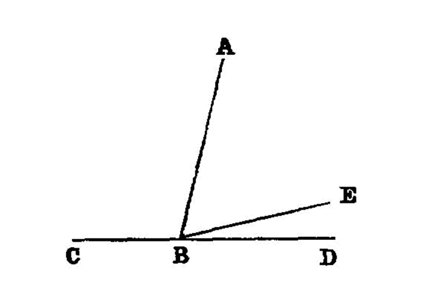

adjacent angles equal to two right angles make a line¶
I.14
If with any straight line, and at a point on it, two straight lines not lying on the same side make the adjacent angles equal to two right angles, the two straight lines will be in a straight line with one another. [1]
—Euclid
{kind=link}
For with any straight line AB, and at the point B on it, let the two straight lines BC, BD not lying on the same side make the adjacent angles ABC, ABD equal to two right angles;
I say that BD is in a straight line with CB.
For, if BD is not in a straight line with BC, let BE be in a straight line with CB.
Then, since the straight line AB stands on the straight line CBE,
the angles ABC, ABE are equal to two right angles. [<a href=”/elem.1.13”>I. 13</a>]
But the angles ABC, ABD are also equal to two right angles;
therefore the angles CBA, ABE are equal to the angles CBA, ABD. [<a href=”/elem.1.post.4”>Post. 4</a> and <a href=”/elem.1.c.n.1”>C.N. 1</a>] [2]
Let the angle CBA be subtracted from each; therefore the remaining angle ABE is equal to the remaining angle ABD, [<a href=”/elem.1.c.n.3”>C.N. 3</a>]
the less to the greater: which is impossible. Therefore BE is not in a straight line with CB.
Similarly we can prove [3] that neither is any other straight line except BD. <pb n=”277”/>
Therefore CB is in a straight line with BD.
Therefore etc.